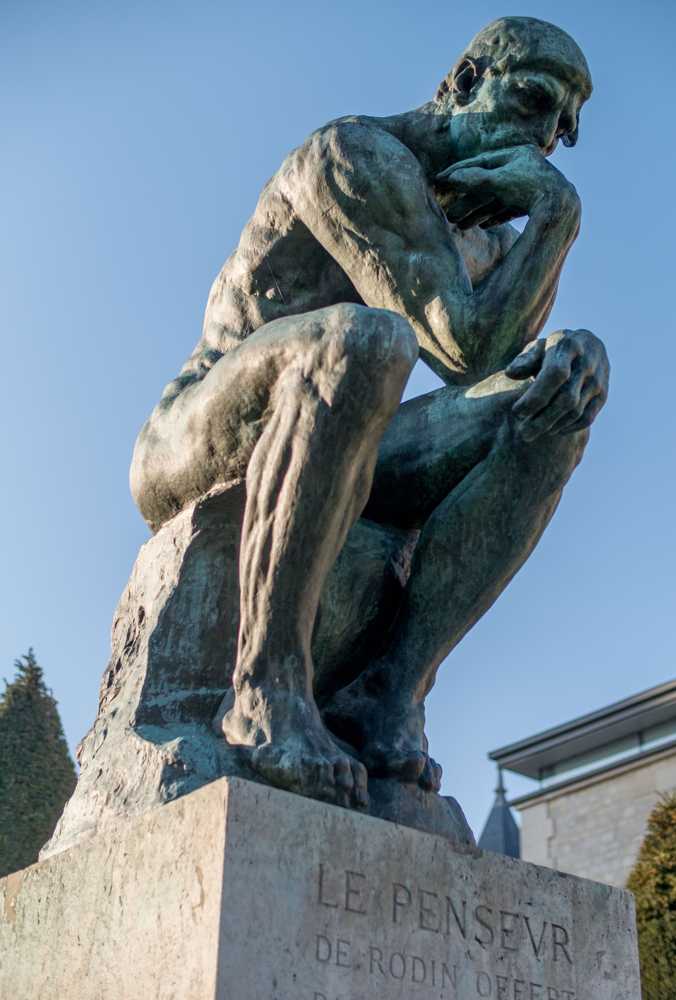

<!DOCTYPE html>
<html lang="en">
  <head>
    <meta charset="utf-8" />
    <meta name="viewport" content="width=device-width, initial-scale=1.0, maximum-scale=1.0, user-scalable=no" />

    <title>Éthique et IA</title>
    <link rel="shortcut icon" href="./favicon.ico" />
    <link rel="stylesheet" href="./dist/reset.css" />
    <link rel="stylesheet" href="./dist/reveal.css" />
    <link rel="stylesheet" href="_assets/theme/myblack.css" id="theme" />
    <link rel="stylesheet" href="./css/highlight/monokai.css" />


  </head>
  <body>
    <div class="reveal">
      <div class="slides"><section  data-markdown><script type="text/template">

<head><style>
        .column5{ width: 50%; float:left;}
</style>
<style>
        .column3{ width: 30%; float:left;}
</style>
<style>
        .column7{ width: 70%; float:left;}
</style>
<style>
.table
{
    border-collapse: collapse;
}
</style>
<style>
  .td, .th /* Mettre une bordure sur les td ET les th */
{
  border: 1px solid white;
}
</style>
<style>
    .reveal {
  font-family: "Source Sans Pro", Helvetica, sans-serif;
  font-size: 26px;
  font-weight: normal;
  color: #fff; }
</style>
<style>
  .reference{
    font-size: 40%;
    text-align: center;
    }
</style>
<script src="node_modules/reveal.js-menu/menu.js">__SCRIPT_END__
<script>
  Reveal.initialize({
    plugins: [ RevealMenu ]
  });
__SCRIPT_END__

</head>


# - Éthique et IA - 
<!-- .slide: data-background="Images/robots.jpg" data-state="dimbg" data-background-opacity="0.5" -->
## Un problème pour la société ?
#### LITIS - FR CNRS Normastic
#### Université du Havre

[D. Olivier](https://damien-olivier.github.io/)

<aside class="notes"><p>Je vais essayer au fil de cette présentation de présenter des éléments d&#39;information sur l&#39;intelligence artificielle et les dangers/problèmes qu&#39;elle génère. Mais avant de me lancer laissez moi, préciser qui je suis ou plutôt mon domaine de compétence et ce que je ne suis pas. Je suis bricolicien en informatique et mes travaux de recherche on pour cadre l&#39;intelligence artificielle. Je ne suis en aucun cas philosophe ou même sociologue. Donc mes propos qui vont suivre doivent être entendu dans ce contexte et en particulier tout ce que je vais avancer au niveau de l&#39;éthique. </p>
<p>L&#39;arrière plan montre 2 visions à 61 ans d&#39;écart. Décembre 1956 le magazine de science fiction Galaxy illustre l&#39;arrivée future des robots, octobre 2017 la une de the New Yorker nous interpelle sur le futur de l&#39;homme. </p>
<p>J&#39;aime particulièrement la première illustration car l&#39;année 1956 est considérée comme la date de naissance de l&#39;IA avec la conférence de Dartmouth organisée par Marvin Minsky, John McCarthy, Claude Shannon et Nathan Rochester.</p>
</aside></script></section><section  data-markdown><script type="text/template">
# Au menu ce soir

<div class="column5" style="font-size:100%">
  <br/><br/><br/>

1. Fixons nous les idées ;
2. Les éthiques et l'IA ;
3. Données et algorithmes un couple toxique.

</div>


<div class="column5">


  <div class="reference">

1.  L’intelligence artificielle se cherche un code de bonne conduite, 2018. *Le Soir*. [https://www.lesoir.be/162574/article/2018-06-14/lintelligence-artificielle-se-cherche-un-code-de-bonne-conduite](https://www.lesoir.be/162574/article/2018-06-14/lintelligence-artificielle-se-cherche-un-code-de-bonne-conduite)

  </div>
</div>

<aside class="notes"><p>De quoi vais-je parler ?</p>
<p>Dans un premier temps, je me propose de fixer un peu le contexte. Autrement dit, je vais essayer que nous nous entendions sur les termes <em>Intelligence Artificielle</em> et <em>éthique</em>. </p>
<p>Ensuite, il me faudra affronter la combinaison IA et éthique. </p>
<p>Enfin, j&#39;aborderai pour finir la relation complexe et souvent toxique entre données et algorithmes qui conduit à des manipulations, des biais et des dilemmes.</p>
</aside></script></section><section ><section data-markdown><script type="text/template">
# Prolégomènes

> L'homme sait assez souvent ce qu'il fait, il ne sait jamais ce que fait ce qu'il fait.
  >> Paul Valery

<aside class="notes"><p>Essayons de faire mentir Paul Valery, mais avant essayons de définir les concepts d&#39;IA et d&#39;éthique.</p>
</aside></script></section><section data-markdown><script type="text/template">
## Intelligence(s) ?
<div class="column5" style="font-size:70%">

* Difficile à définir ;
* "donnons la parole" à quelques scientifiques :

> c’est ce qui fait que cela fonctionne. (Edison)

> C’est ce qui permet la survie de l’individu le plus apte. (Darwin)

> C’est ce qui rend difficile la distinction entre une tâche réalisée par un être humain ou par une machine. (Turing)
     
> C’est collectif et cela émerge du comportement collectif. (Lorenz)

</div>
<div class="column5">
  
  <div class="reference">

  1. RODIN, 2021. Le Penseur. *Wikipédia* [en ligne]. Jardin musée Rodin, Paris. [https://fr.wikipedia.org/w/index.php?title=Le_Penseur&oldid=185809839](https://fr.wikipedia.org/w/index.php?title=Le_Penseur&oldid=185809839) 
  </div>
</div>

<aside class="notes"><p>J&#39;aime bien donner la parole à quelques grands scientifiques pour commencer. Ces citations sont apocryphes, mais je me permets de trahir ces grands hommes en m&#39;appuyant sur leurs travaux scientifiques.</p>
</aside></script></section><section data-markdown><script type="text/template">
## Intelligence - expertise
<div class="column5">
  
  <div class="reference" style="text-align:center">
    
    1. Source inconnue. 
  </div>
</div>
<div class="column5">
  <ul>
    <li>Résolution de problème - capacité à atteindre différents objectifs ;</li>
    <li>ensemble d'expertise dans un grand nombre de domaine ;</li>
    <li>capacité à acquérir une expertise .... apprentissage du savoir et du savoir faire, adaptabilité.</li>
  </ul>  
</div>

<aside class="notes"><p>Commenter d&#39;abord la diapo.</p>
<ul>
<li><p>C&#39;est la capacité à résoudre des problèmes et/ou à atteindre différents objectifs.</p>
</li>
<li><p>Il n&#39;y a pas d&#39;échelle linéaire de l&#39;intelligence, c&#39;est un espace à n dimensions. J&#39;ai choisi la toile d&#39;araignée pour représenter cela
et les fils radiaux sont les axes de l&#39;expertise, plus ils sont longs plus on est expert d&#39;une certaine façon. L&#39;inconvénient de cette représentation
est le coté discret alors que c&#39;est continu.</p>
</li>
<li><p>Certains objectifs sont atemporel et non lié sur une accumulation de connaissance (ondes gravitationnelles), d&#39;autres le sont.</p>
</li>
<li><p>Puis je être un expert sur l&#39;exploration de mars en tant qu&#39;individu ? NON Il nous faut être un superindividu ! </p>
</li>
</ul>
<p>La connaissance universelle a disparu en même temps que le siècle des lumières. Prenez votre téléphone personne ne maîtrise la totalité des connaissances scientifiques et technologiques les constituant.</p>
</aside></script></section><section data-markdown><script type="text/template">
## Intelligence artificielle<!-- .slide: data-background="Images/Iceberg.jpg" data-state="dimbg" data-background-opacity="0.5" -->

##### De _Hello word_ à _je pense donc je suis_

<div class="column5">
<br/>
<br/>

* IA faible <!-- .element: class="fragment grow" -->
  * le programme d'IA ne fait que reproduire un comportement spécifique, mais pas son fonctionnement.

<br/>
<br/>

* IA forte  
  - le programme d'IA a des "états cognitifs".
  - Pensées, mémoire, représentations mentales, schémas de pensée ...

</div>

<div class="column5">

<!-- .element: style="width:300px" -->

  <div class="reference">

1. CRBR. Intelligence artificielle. *Les dessins d’actualité de CeRBèRe*. [http://dessinsdecrbr.over-blog.com/2017/09/intelligence-artificielle.html](http://dessinsdecrbr.over-blog.com/2017/09/intelligence-artificielle.html)
  </div>

</div>

<aside class="notes"><p>IA forte n&#39;est pas là encore !
mais le vocabulaire est encore une fois dans ce domaine mal choisi. L&#39;IA faible n&#39;est pas si faible que cela, elle est capable de faire bien mieux que l&#39;humain dans de nombreux domaines et d&#39;agir sur nos sociétés, nous le verrons par la suite.</p>
</aside></script></section><section data-markdown><script type="text/template">
<!-- .slide: data-background="Images/Iceberg.jpg" data-state="dimbg" data-background-opacity="0.5" -->
## Intelligence(s) artificielle(s)
##### Fixons un peu les choses

* Simuler sur des ordinateurs les différentes facultés cognitives.
  - Vision anthropomorphique ;
    * La perception, l’apprentissage, la mémoire, les fonctions exécutives, communicatives … 
    * dans le but de mieux comprendre ces fonctions mais aussi de rendre des services liés à leurs automatisations.
* Entité capable de percevoir son environnement, de construire des représentations de cette perception, puis de faire des calculs sur ces représentations, afin de décider et d’agir.<!-- .element: class="fragment highlight-green" -->
  - Vision rationnelle. 
* Machine pensante, H+, vers la singularité.<!-- .element: class="fragment" -->
  - Bof, bof pour le moment<!-- .element: class="fragment" -->

<aside class="notes"><p>On passe d&#39;une approche anthropomorphique, historique à une approche rationnelle vision moderne, même si elle est parfois bioinspirée.</p>
<p>Entité cela peut être un programme, un robot, un agent .....</p>
<p>Beaucoup de fantasme sur le dernier point non construit sur des éléments scientifiques, mais sur des éléments d&#39;autorité.</p>
<p><strong>MAIS retenons surtout la partie immergée de l&#39;iceberg, l&#39;IA ne fonctionne pas sur des représentations et des logiques humaines</strong> et n&#39;oublions pas que lorsque l&#39;on voit une fleur artificielle personne ne pense que c&#39;est une fleur et que lorsque alpha Go a battu
Leo Sedol en 2016, elle n&#39;a pas fait la fête après, elle ne savait même pas qu&#39;elle jouait.</p>
</aside></script></section><section data-markdown><script type="text/template">
## Épistémologie et Éthique

<div class="column7">


<div class="reference">

1. Combon [https://www.eurogroupconsulting.com/wp-content/uploads/2021/02/illustration_point-de-lobs_48.jpg](https://www.eurogroupconsulting.com/wp-content/uploads/2021/02/illustration_point-de-lobs_48.jpg)
</div>

</div>
<div class="column3">

> Épistémologie 
  >> chercher le vrai <!-- .element: class="fragment" -->

> Éthique 
  >> chercher le bien <!-- .element: class="fragment" -->

</div>

<aside class="notes"><p>Il me semble difficile de dissocier l&#39;épistémologie de l&#39;éthique et je reviendrai sur cela à la fin. De façon très synthétique, peut-être trop synthétique, on 
peut dire que l&#39;épistémologie est une réflexion argumentée en vue de chercher le vrai et l&#39;éthique une réflexion argumentée en vue du bien-agir.</p>
<p>Poursuivons du coté de l&#39;éthique.</p>
</aside></script></section><section data-markdown><script type="text/template">
## Éthique

<br/>
<div class="column7">
<br/>

Délimite la responsabilité humaine et permet aux humains de savoir comment orienter leur liberté.<!-- .element: style="background:blue;font-size:120%" -->

<br/>

Les principes doivent être choisis derrière un voile d'ignorance.
</div>

<div class="column3">

> "You have to be honest when you’re out of the law." 
  >>   Bob Dylan

</div>


<aside class="notes"><h2 id="éthique">Éthique</h2>
<p>La démarche éthique doit être un exercice de pensée universel. Elle consiste à <em>délimiter la responsabilité humaine et à permettre aux humains de savoir comment orienter leur liberté</em>.
Les principes sont choisis derrière un <em>voile d&#39;ignorance</em>. Se mettre dans une position originelle est une façon de penser le système séparément de ses propres intérêts, notre situation est ainsi pour tous &quot;comparable&quot; et les principes ne peuvent être que le résultat d&#39;accords ou de négociations équitables.</p>
<p>Nous ne nous lancerons pas dans un débat autour de morale vs. éthique. Latin ou grec. Même si la distinction peut faire sens et l&#39;on se propose de suivre Paul Ricueur, l&#39;éthique précède l&#39;introduction de loi morale. 
Cette dernière désigne tout ce qui est dans l&#39;ordre du bien ou du mal et se rapporte à des lois, des impératifs ou des normes. Si j&#39;osais, pour l&#39;informaticien que je suis, La morale se programme, l&#39;éthique <strong>NON</strong> ! </p>
<p>Un dernier point, tant que l&#39;IA forte n&#39;est pas encore là, l&#39;<strong>IA éthique</strong> n&#39;existe pas sauf pour de l&#39;éthique washing. S’il est question d’éthique, elle est propre aux humains. Et plus encore, s’il est question d’éthique, elle est sujette aux considérations, continuellement reformulées, que nous autres humains élaborons à propos de ce qui est moral, acceptable.</p>
<ul>
<li>Cf la vision de mai 68 et la libération sexuelle ou encore le travail des enfants et le rapport aux aînés.</li>
</ul>
</aside></script></section></section><section ><section data-markdown><script type="text/template">
# Éthique pour/de l'IA 


<div class="reference" style="text-align:center">

1 .PLATETSKY, Gregory. Cartoon: Teaching Ethics to AI. *KDnuggets*. [https://www.kdnuggets.com/cartoon-teaching-ethics-to-ai.html/](https://www.kdnuggets.com/cartoon-teaching-ethics-to-ai.html)

</div>
<aside class="notes"><p>Je vous propose que maintenant nous nous interrogions sur l&#39;éthique pour/de l&#39;IA.</p>
<p>Mother in law = belle mère</p>
</aside></script></section><section data-markdown><script type="text/template">
## Les éthiques 

<div class="r-stack">
  
  
  
</div>

<aside class="notes"><ul>
<li>Éthique des algo <ul>
<li>ex : la programmation des voitures autonomes en cas d’accident inévitable. Comment doivent-elles réagir ? Les passagers, les occupants de l&#39;autre voiture ?</li>
</ul>
</li>
<li>Éthique de l&#39;IA <ul>
<li>ce qui est bon, juste ou vertueux avec un système d’IA.</li>
</ul>
</li>
<li>En passant la reformulation/reconsidération de l&#39;éthique pose des problèmes. Quelles conséquences cela a sur les systèmes d&#39;IA ?</li>
</ul>
</aside></script></section><section data-markdown><script type="text/template">
## Quelle morale coder et définir ?
### Des exemples

<div class="column5" style="background:grey;font-size:75%">

### Éthique des algorithmes 
* Comment programmer une voiture autonome en cas d’accident inévitable ? 
* Les robots devraient-ils offrir l’option de simuler une résistance ?
* Une application de rencontres devrait-elle automatiser ou réduire certaines discriminations ? 
* Comment rendre explicable une décision/action ?

</div>

<div class="column5" style="background:dimgray;font-size:75%">

### Éthique de l’IA
* Faut-il déployer des voitures autonomes ? 
* Faut-il bannir les robots sexuels ? 
* Y-a-t-il des droits pour les robots/IA ?
* Quelles est la responsabilités des robots/IA ? 
* Un programme d'IA peut-il prendre des décisions de justice ? 
* Quelle place pour l'humain ?

</div>

<aside class="notes"><p>Donnons quelques exemple. Ce n&#39;est en aucun exhaustif.</p>
</aside></script></section><section data-markdown><script type="text/template">
## Recommandations
11 grandes valeurs (par fréquence) :

<div class="column3" style="font-size:80%">

* transparence ;
* justice, équité ;
* non-malfaisance, ne pas nuire ;
* responsabilité ;
* droit à l'intimité, sphère privée ;
* bienfaisance ; 
* liberté et autonomie ;
* confiance ;
* durabilité ;
* dignité ;
* solidarité.

</div>
<div class="column7" style="font-size:100%">


</div>
<div class="reference">

1. JOBIN, Anna, IENCA, Marcello et VAYENA, Effy, 2019. The global landscape of AI ethics guidelines. *Nature Machine Intelligence*. septembre 2019. Vol. 1, n° 9, pp. 389‑399. DOI 10.1038/s42256-019-0088-2.

</div>

<aside class="notes"><p>L&#39;éthique des algorithmes est laissée aux informaticiens, sans contrôle. C&#39;est un peu comme si on autorisait les industries pharmaceutiques à mettre leurs molécules sur le marché sans aucune régulation.</p>
<p>Concernant l&#39;éthique de l&#39;IA. Privé, public à différentes échelles s&#39;en préoccupe. </p>
<p>USA (n=20) EU (19), GB (14), Japan (4).
Canada, Iceland, Norway, the United Arab Emirates, India, Singapore, South Korea,
Australia are represented with 1 document each.</p>
</aside></script></section><section data-markdown><script type="text/template">
## Des règles communes ?

<!-- .element: style="width:450px" -->

<aside class="notes"><p>J&#39;ai pas résisté à vous mettre un détournement de Xkcd sur le problème de la définition d&#39;une éthique commune. Toute ressemblance avec un standard quelconque ne serez que fortuite !</p>
</aside></script></section><section data-markdown><script type="text/template">
## Oups  
### MAJ

 > Le monde a besoin de règles pour que l'intelligence artificielle profite à l’humanité. La Recommandation sur l'éthique de l’IA est une réponse forte. Elle fixe le premier cadre normatif mondial tout en donnant aux États la responsabilité de l’appliquer à leur niveau. L’UNESCO soutiendra ses 193 États membres dans sa mise en œuvre et leur demandera de rendre compte régulièrement de leurs progrès et de leurs pratiques. 
 >> Audrey Azoulay, Directrice générale de l'UNESCO 22 novembre 2021

<div class="reference">

UNESCO, 2021. *Projet de recommandation sur l’éthique de l’Intelligence Artificielle*. 22 November 2021.
[https://unesdoc.unesco.org/ark:/48223/pf0000379920_fre/PDF/379920fre.pdf.multi.page=15](https://unesdoc.unesco.org/ark:/48223/pf0000379920_fre/PDF/379920fre.pdf.multi.page=15)
</div>

<aside class="notes"><p>J&#39;ai fait le choix de garder la précédente diapositive en contradiction avce celle-ci, mais seul l&#39;avenir dira si réellement une éthique commune se dégage. A titre personnel j&#39;y crois peu car l&#39;axiologie dépend d&#39;un contexte social, historique et économique ... Prenez par exemple la consommation de viande, l&#39;alcool, le hachich ... 
D&#39;autre part quand vous lisez le document, il fixe uniquement des grandes orientations. Il est très méta.</p>
</aside></script></section></section><section ><section data-markdown><script type="text/template">


# La grande manipulation

<div class="r-stack">
  <span class="fragment current-visible" style="font-size: 80%">

## Les algorithmes collectent et manipulent des données 
## Les algorithmes nous manipulent
## Les données manipulent les algorithmes
  </span>
  
  <div class="fragment">
    <div class="reference">

<!-- .element: style="width:650px;background-color:white;" -->

1. ELLIOTT, Timo, 2018. How to Explain AI to Your Boss? (Cartoon). *Digital Business & Business Analytics* 29 août 2018. [https://timoelliott.com/blog/2018/08/how-to-explain-ai-to-your-boss-cartoon.html](https://timoelliott.com/blog/2018/08/how-to-explain-ai-to-your-boss-cartoon.html) 

    </div>
  </div>  
</div>

<aside class="notes"><p>Je vous l&#39;ai annoncé données et algorithmes forment un couple toxique. En effet </p>
<ol>
<li>Les algorithmes collectent et manipulent des données </li>
<li>Les algorithmes nous manipulent</li>
<li>Les données manipulent les algorithmes</li>
</ol>
<p>et tout cela à des conséquences importantes. Mais ne jetons l&#39;eau du bain avec le bébé ni même la baignoire. Les algorithmes ne font pas pire que nous, simplement il le font plus vite.</p>
</aside></script></section><section data-markdown><script type="text/template">
## Pour comprendre
### Le schéma de base

<!-- .element: style="width:800px;background-color:white;" -->

<aside class="notes"><p>Arrêtons nous quelques instants sur le fonctionnement global d&#39;un programme d&#39;apprentissage. Cela constitue actuellement ce qu&#39;au niveau du grand public on appelle IA.
En entrée on trouve des données, des masses de données (Big Data) et ensuite il y a une phase d&#39;apprentissage statistique, soit en fonction de caractéristiques fixées 
par le programmeur, soit déterminées par le programme.</p>
<p>Deux constats importants :</p>
<ul>
<li>le traitement est <em><strong>inductif</strong></em>, le programme arrive à des conclusions à partir d&#39;exemple .... d&#39;où le problème du vrai. On retrouve là une question épistémologique.</li>
<li>dans le deuxième cas</li>
</ul>
</aside></script></section><section data-markdown><script type="text/template">
## Les algorithmes collectent 
## et manipulent des données

<!-- .element: style="width:780px"-->

<div class="reference">

CIRIO, Paolo, 2020. Capture. [https://paolocirio.net/work/capture/](https://paolocirio.net/work/capture/)

</div>


<aside class="notes"><p>Paolo Cirio (Hackeur éthique) — pour son projet nommé Capture — a créé une base de données contenant 4000 visages de policiers français pour les identifier avec une technologie de reconnaissance faciale, via sa plateforme <a href="https://capture-police.com">https://capture-police.com</a>. Le 1er octobre 2020, l&#39;artiste a effectué une performance de &quot;street art&quot; en dévoilant une partie des portraits des officiers de police tirés de sa plateforme, affichés un peu partout à Paris.</p>
<p>La police française utilise une base de données Traitement des Antécédents Judiciaires (TAJ).</p>
<p>Retiré à la demande du ministre de l&#39;intérieur.</p>
</aside></script></section><section data-markdown><script type="text/template">

## Les algorithmes collectent
<div class="r-stack">

## et manipulent des données<!-- .element class="fragment fade-out" data-fragment-index="0"-->
## et nous manipulent<!-- .element class="fragment" data-fragment-index="0" -->
</div>  


<aside class="notes"><p>Cambridge Analytica, il a été établi que cette société anglaise avec collecté de nombreux profils sur Facebook et sans doute influencé le résultat de l&#39;élection du président des États-Unis d&#39;Amérique. </p>
<p>En avril 2018, Mark Zuckerberg a reconnu les faits officiellement, et a annoncé que 87 millions de profils avait été dérobés au total.</p>
</aside></script></section><section data-markdown><script type="text/template">

## Les algorithmes nous manipulent

<!-- .element: style="width:520px"-->
<!-- .element: style="width:520px"-->
<div class="reference">

1. BLOG, Netflix Technology, 2017. Artwork Personalization at Netflix. *Medium*. 7 décembre 2017.[https://netflixtechblog.com/artwork-personalization-c589f074ad76](https://netflixtechblog.com/artwork-personalization-c589f074ad76)
2. LI, Lihong, CHU, Wei, LANGFORD, John and WANG, Xuanhui, 2011. Unbiased offline evaluation of contextual-bandit-based news article recommendation algorithms. In: *Proceedings of the fourth ACM international conference on Web search and data mining - WSDM ’11*. Hong Kong, China: ACM Press. 2011. p. 297. [10.1145/1935826.1935878](10.1145/1935826.1935878)
</div>  


<aside class="notes"><p>Si vous êtes quelqu&#39;un qui aime John Travolta la vignette de Pulp Fiction est avec lui. Par contre si vous préférez Uma  Thurman ce sera l&#39;autre vignette.</p>
</aside></script></section><section data-markdown><script type="text/template">
## Les algorithmes nous manipulent
### Comment l'IA s'empare de notre esprit
<!-- .slide: data-background="Images/hijackingYourMind.jpg" data-state="dimbg" data-background-opacity="0.3" -->

* Contrôlez le menu et vous contrôlerez les choix.
* Mettez une machine à sous dans la poche d’un milliard de
personnes (notifications, scrolling, swipe sur Tinder).
* La peur de manquer quelque chose d'important : facebook, app de rencontre...
* Recherche de l’approbation sociale : tag, pouce en l'air, nouvelle photo de profil.
* Utilisez des News feed sans fin et l’autoplay (Youtube)

<div class="reference" style="text-align: left;">
<br/><br/><br/></br>

1. HARRIS, Tristan, 2019. How Technology is Hijacking Your Mind — from a Former Insider. *Thrive Global* [https://medium.com/thrive-global/how-technology-hijacks-peoples-minds-from-a-magician-and-google-s-design-ethicist-56d62ef5edf3](https://medium.com/thrive-global/how-technology-hijacks-peoples-minds-from-a-magician-and-google-s-design-ethicist-56d62ef5edf3)

</div>
<aside class="notes"><p>L&#39;interface, cela s&#39;inspire du casino. L&#39;addiction n&#39;est pas loin. Je suis sur que certain d&#39;entre-vous on déjà consulté durant cet exposé leur bandit manchot, sans doute avec une bonne excuse !</p>
</aside></script></section><section data-markdown><script type="text/template">
## Les algorithmes nous manipulent
### Contagion émotionnelle

* Une polémique
> "La collecte de données par Facebook a pu se faire selon des pratiques qui ne cadrent pas parfaitement avec les règles qui garantissent le consentement des participants ou leur laissent le choix de se retirer d'une étude".  Inder Verma, rédactrice en chef de PNAS.<!-- .element: style="font-size:60%" -->
* Des résultats intéressants
 
<!-- .element: style="width:250px" -->  
  
<div class="reference" style="text-align: left;">

1. KRAMER, Adam D. I., GUILLORY, Jamie E. et HANCOCK, Jeffrey T., 2014. Experimental evidence of massive-scale emotional contagion through social networks. *Proceedings of the National Academy of Sciences*. 17 juin 2014. Vol. 111, n° 24, pp. 8788‑8790. DOI 10.1073/pnas.1320040111. [https://www.pnas.org/content/111/24/8788](https://www.pnas.org/content/111/24/8788)
</div>
<aside class="notes"><ul>
<li><p>~700 000 participants sur 1 semaine </p>
</li>
<li><p>En Haut nombre de mots positifs, en bas nombre de mots négatifs</p>
<ul>
<li>A gauche on réduit l&#39;exposition aux nombres de mots négatifs et on constate dans le groupe expérimental une augmentation du nombre de mots positifs et une diminution du nombre de mots négatifs par rapport au groupe témoin. </li>
<li>A droite on réduit l&#39;exposition aux nombres de mots positifs</li>
</ul>
</li>
</ul>
</aside></script></section><section data-markdown><script type="text/template">
## Les données manipulent les algorithmes
### L'islamophobie de GPT3

<!-- .element: style="width:750px" -->  

<div class="reference" style="text-align: left;">

1. ABID, Abubakar, FAROOQI, Maheen and ZOU, James, 2021. Persistent Anti-Muslim Bias in Large Language Models. In: *Proceedings of the 2021 AAAI/ACM Conference on AI, Ethics, and Society*. 21 July 2021. p. 298–306. [10.1145/3461702.3462624](10.1145/3461702.3462624)
2. SAID, Edward W., 2003. *Orientalism*. Facsimile edition. London: Penguin. Penguin modern classics. ISBN 978-0-14-118742-6. 

</div>

<aside class="notes"><p>Dans le cas de GPT-3, 60 % de ses données d&#39;entraînement sont liées à l&#39;ensemble de données Common Crawl, un échantillon des 60 millions de domaines sur Internet et du sous-ensemble des sites Web auxquels ils se rapportent. Ainsi, GPT-3 s&#39;est formé sur de nombreux sites Internet réputés, tels que la BBC, ainsi que sur les moins réputés (c&#39;est-à-dire Reddit). Les 40 % restants sont constitués de sources organisées telles que Wikipédia et le texte intégral de livres pertinents (Brockman, 2020). Il est essentiel de souligner que GPT-3 a été principalement formé sur des données en anglais (bien qu&#39;il soit capable de traduire du français, de l&#39;allemand et du romain vers l&#39;anglais).</p>
</aside></script></section><section data-markdown><script type="text/template">
## Les données manipulent les algorithmes
### Tay *vs* Xiaoice

<div class="column5">


</div>

<div class="column5">


</div>
</script></section><section data-markdown><script type="text/template">
## Les données manipulent les algorithmes
### Empoisonnement des données

<!-- .element: style="width:600px" -->  


<div class="reference" style="text-align: left;">

1. ATHALYE, Anish, ENGSTROM, Logan, ILYAS, Andrew et KWOK, Kevin, 2018. Synthesizing robust adversarial examples. In : DY, Jennifer et KRAUSE, Andreas (éd.), *Proceedings of the 35th international conference on machine learning*. PMLR. 10 juillet 2018. pp. 284‑293. Proceedings of machine learning research. [http://proceedings.mlr.press/v80/athalye18b/athalye18b.pdf](http://proceedings.mlr.press/v80/athalye18b/athalye18b.pdf)
</div>

<aside class="notes"><p>Apprentissage automatique contradictoire.</p>
<p>En 2004, Nilesh Dalvi et d&#39;autres ont noté que les classificateurs linéaires utilisés dans les filtres anti-spam pouvaient être vaincus par de simples « attaques d&#39; évasion », les spammeurs insérant de « bons mots » dans leurs e-mails de spam. (Vers 2007, certains spammeurs ont ajouté du bruit aléatoire aux mots flous dans le « spam image » afin de vaincre les filtres basés sur l&#39; OCR .) En 2006, Marco Barreno et d&#39;autres ont publié « Can Machine Learning Be Secure ? », décrivant une large taxonomie des attaques . Jusqu&#39;en 2013, de nombreux chercheurs continuaient d&#39;espérer que les classificateurs non linéaires (tels que les machines à vecteurs de support et les réseaux de neurones) pourrait être robuste face aux adversaires, jusqu&#39;à ce que Battista Biggio et d&#39;autres aient démontré les premières attaques basées sur le gradient sur de tels modèles d&#39;apprentissage automatique (2012 [6] -2013 [7] ). En 2012, les réseaux de neurones profonds ont commencé à dominer les problèmes de vision par ordinateur ; à partir de 2014, Christian Szegedy et d&#39;autres ont démontré que les réseaux de neurones profonds pouvaient être trompés par des adversaires, en utilisant encore une fois une attaque basée sur le gradient pour créer des perturbations antagonistes. [8] [9]</p>
<p>Récemment, il a été observé que les attaques adverses sont plus difficiles à produire dans le monde pratique en raison des différentes contraintes environnementales qui annulent l&#39;effet des bruits. [10] [11] Par exemple, toute petite rotation ou légère illumination sur une image contradictoire peut détruire l&#39;opposition.</p>
</aside></script></section></section><section ><section data-markdown><script type="text/template">
# Biais et dilemmes de l'IA
## Ou quelques conséquences de ces manipulations
</script></section><section data-markdown><script type="text/template">
## Racismes (?) et mégenrage 

<!-- .element: style="width:800px" -->  
<!-- .element: style="width:600px" -->  


<aside class="notes"><ul>
<li>Logiciel COMPASS</li>
<li>l’IA  » mégenre  » nettement plus souvent les personnes de couleur que les personnes blanches. Alors que le taux d’erreur est d’à peine 1% pour les hommes blancs, il atteint 35% pour les femmes de couleur.</li>
</ul>
<p>Traduction The doctor is smart. The nurse is pretty. A essayer dans google traduction.</p>
<p>D’autres exemples sont évoqués, comme l’application FaceApp qui blanchit Barack Obama pour le rendre plus sexy, Google Photos percevant deux personnes noires comme un couple de gorilles, l’assistant vocal Bixby de Samsung incapable de comprendre les voix féminines. </p>
<p>Pb un manque de données sur les minorités pendant la phase d’entraînement peut avoir des conséquences terribles lors de la mise en production…</p>
</aside></script></section><section data-markdown><script type="text/template">

## La prise de décision et la responsabilité

<video controls autoplay="false" loop="true" muted="true" width="840">
   <source src="Vidéos/TrolleyProblem.mp4" type="video/mp4"> Your browser does not support the video tag.
</video>

<div class="reference" style="text-align: left;">

1. FOOT, Philippa, 1967. The Problem of Abortion and the Doctrine of the Double Effect. *Oxford Review*. 1967. Vol. 5, p. 5–15. 
2. SCHUR, Michael, 2018. *Good Place Trolley Problem*. 2018. [https://www.youtube.com/watch?v=JWb_svTrcOg](https://www.youtube.com/watch?v=JWb_svTrcOg)
3. MALLE, Bertram F., SCHEUTZ, Matthias, ARNOLD, Thomas, VOIKLIS, John and CUSIMANO, Corey, 2015. Sacrifice One For the Good of Many? People Apply Different Moral Norms to Human and Robot Agents. In: *Proceedings of the Tenth Annual ACM/IEEE International Conference on Human-Robot Interaction* [online]. New York, NY, USA: Association for Computing Machinery. 2 March 2015. p. 117–124. [https://hrilab.tufts.edu/publications/malleetal15hri.pdf](https://hrilab.tufts.edu/publications/malleetal15hri.pdf).
</div>

<aside class="notes"><p>Attention c&#39;est un peu gore ....</p>
<p>Expliquer le dilemme et le différentes situations, ainsi que les variantes </p>
<p>Le psychologue Bertram Malle a présenté le dilemme du tramway, en y ajoutant une variable.Cette fois-ci, l’aiguillon est commandé par un être plus ou moins humanoïde, allant de l’humain à la boite noire, en passant par un robot humanoïde et un simple robot. Plus l’acteur est physiquement proche de l’homme, et plus on la blâme dans le cas où elle agit. Inversement, moins elle est proche de l’homme et plus on le blâme de ne pas avoir agi. On réprouve une machine robotoïde qui refuse de s’impliquer, on attend d’elle qu’elle agisse, sans état d’âme et en calculant l’option aux conséquences les moins graves. A contrario, on attend d’une machine anthropomorphe qu’elle agisse en humain, émotivement, qu’elle ait de grande difficulté à choisir de donner la mort à quelqu’un, tant et si bien qu’elle nous apparaîtra comme inhumaine s’il choisit de le faire. Chez l’homme, la répulsion à se salir les mains, résulte d’un biais d’omission : dans les situations où l’on considère que notre intervention serait nuisible, on tend à préférer l’inaction (dans le dilemme du tramway, il y aura des pertes quoi qu’on fasse, alors autant ne rien faire)</p>
</aside></script></section><section data-markdown><script type="text/template">
## La prise de décision et la responsabilité

<video controls autoplay="false" loop="true" muted="true" width="840">
   <source src="Vidéos/Ubercrash.mkv" type="video/mp4"> Your browser does not support the video tag.
</video>

<div class="reference" style="text-align: left;">

1. ABC NEWS, 2018. *New video shows moments before fatal self-driving Uber crash*. 22 March 2018. [https://www.youtube.com/watch?v=ufNNuafuU7M](https://www.youtube.com/watch?v=ufNNuafuU7M).
</div>
</script></section><section data-markdown><script type="text/template">
## Notre perception/interprétation
### Les zones d'attention

<!-- .element: style="width:400px" -->  

<!-- .element: style="width:600px" -->  


<div class="reference">

1. RIBEIRO, Marco Tulio, SINGH, Sameer and GUESTRIN, Carlos, 2016. “Why Should I Trust You?”: Explaining the Predictions of Any Classifier. In: *Proceedings of the 22nd ACM SIGKDD International Conference on Knowledge Discovery and Data Mining*. San Francisco California USA: ACM. 13 August 2016. p. 1135–1144. ISBN 978-1-4503-4232-2. [10.1145/2939672.2939778](10.1145/2939672.2939778)
1. DAS, Abhishek, AGRAWAL, Harsh, ZITNICK, Larry, PARIKH, Devi and BATRA, Dhruv, 2017. Human attention in visual question answering: Do humans and deep networks look at the same regions? *Computer Vision and Image Understanding*. 2017. Vol. 163, p. 90–100. [http://arxiv.org/abs/1606.03556](http://arxiv.org/abs/1606.03556)

</div>

<aside class="notes"></aside></script></section><section data-markdown><script type="text/template">
## L'art sans artiste
### Next Rembrandt
<div class="column5">


</div>
<div class="column5">


</div>

<div class="reference">

1. Université de Technologie de Delft, Microsoft, 2016. *The Next Rembrandt*. [https://www.nextrembrandt.com](https://www.nextrembrandt.com)
</div>

<aside class="notes"><p>L&#39;université de Technologie de Delft, au Pays-Bas, associée à Microsoft, dévoilent en 2016, une nouvelle toile de Rembrandt produite grâce à une intelligence artificielle. Les logiciels ne se sont pas contentés de disséquer l’œuvre du peintre pour en révéler ses techniques, ils ont véritablement peint un tableau original avec de l&#39;impression additive (3D), représentant un superbe portrait d&#39;un homme au chapeau noir.</p>
<p>La première étape a consisté à scanner en très haute définition plus de 160 000 fragments issus de 346 toiles du maître sur la période de 1632 à 1642. Afin de capter au mieux les détails, l&#39;analyse des œuvres de Rembrandt a été réalisée à l&#39;aide d&#39;un algorithme de deep learning permettant de maximiser la résolution et la qualité des scans. Les informations de cette précieuse collecte ont été stockées dans une base de données, constituant ainsi le socle numérique pour fabriquer le nouveau Rembrandt.</p>
<p>Enfin, pour rendre vivante cette photo numérique de 148 millions de pixels, notre équipe a eu recours à l&#39;impression 3D. Un algorithme a d&#39;abord procédé à l&#39;identification du nombre de couches qu&#39;aurait laissé le maître flamand s&#39;il avait eu à peindre The Next Rembrandt.</p>
<p>PB : est-ce une oeuvre d&#39;art ? Ce n&#39;est pas peint par Rembrandt, mais lui même utilisait ses élèves.</p>
</aside></script></section><section data-markdown><script type="text/template">
## Singularité ?


</script></section><section data-markdown><script type="text/template">
## Armes létales autonomes


<div class="reference">

1. Moins d’autonomie, plus d’humanité, 2021. *Stop Killer Robots*. Available from: [https://www.stopkillerrobots.org/fr/](https://www.stopkillerrobots.org/fr/)  
</div>

<aside class="notes"><ul>
<li>La plus ancienne arme létale à déclenchement automatique est la mine terrestre, utilisée depuis au moins les années 1600.</li>
<li>Défense anti-aérienne</li>
<li>Pb des armes offensives</li>
<li>En 2020 un robot tueur turc aurait tué une cible Libyenne sans être dirigé.</li>
</ul>
</aside></script></section></section><section ><section data-markdown><script type="text/template">
# Excipit

<div class="r-stack">

> De "Science Finds, Industry Applies, Man Conforms"
  >> Exposition universelle de 1933 (Chicago)
<!-- .element class="fragment fade-out" data-fragment-index="0"-->
> À "People Propose, Science Studies, Technology Conforms"
<!-- .element class="fragment" data-fragment-index="0" -->
</div>  

<br/><br/><br/>
<div class="reference">

1. NORMAN, Donald A., 1998. *The Invisible Computer: Why Good Products Can Fail, the Personal Computer Is So Complex, and Information Appliances Are the Solution*. Cambridge, MA, USA: MIT Press. ISBN 978-0-262-14065-2.
</div>

<aside class="notes"><p>Permettez moi de finir sur un excipit, cela me semble difficile de conclure .
De La science découvre, l&#39;industrie applique, l&#39;Homme suit à le peuple propose, la science étudie et la technologie s&#39;y plie aux exigences.</p>
</aside></script></section><section data-markdown><script type="text/template"> 
## La loi

> L’informatique doit être au service de chaque citoyen. Son développement doit s’opérer dans le cadre de la coopération internationale. Elle ne doit porter atteinte ni à l’identité humaine, ni aux droits de l’homme, ni à la vie privée, ni aux libertés individuelles ou publiques.
  >> Article 1 - Loi n° 78-17 du 6 janvier 1978 relative à l’informatique, aux fichiers et aux libertés -

<div class="reference">

1. Article 1 - Loi n° 78-17 du 6 janvier 1978 relative à l’informatique, aux fichiers et aux libertés - Légifrance, [https://www.legifrance.gouv.fr/loda/article_lc/LEGIARTI000037822962/](https://www.legifrance.gouv.fr/loda/article_lc/LEGIARTI000037822962/)
</div>

<aside class="notes"><p>Nous devons nous emparer de cela, avant qu&#39;il ne soit trop tard. L&#39;éthique des algorithmes ne doit pas être laissée aux seuls informaticiens.</p>
</aside></script></section><section data-markdown><script type="text/template">
## Des questions<!-- .slide: data-background="Images/AI-Genie.jpg" data-state="dimbg" data-background-opacity="0.5" -->

* Comment organiser un tel débat ?
* Comment l'IA change t-elle le pouvoir ?
* Serait-il moralement acceptable d’utiliser l’intelligence artificielle pour persuader les gens de l’urgence climatique ?
* Serait-il moralement acceptable d’utiliser l’intelligence artificielle pour persuader les gens de se faire vacciner ?
* Quelle éthique pour l'éthique de l'IA ?
* ~~Dilemme~~ Multilemme 
  * Reprenez les 11 grandes valeurs, comment toutes les concilier ?
    * Ex : vie privée, sécurité, transparence cf. le projet Capture de Paolo Cirio.
</script></section><section data-markdown><script type="text/template">
## Des orientations


* Construction collective - compromis accessible vs inaccessible ;
  * donner la parole aux minorités (femmes, racisés, handicapés, LGBT+).
* Réintroduire l'épistémologie dans le débat.
  * Ne pas oublier que le probable de l'inductif ne veut pas dire vrai.
</script></section><section data-markdown><script type="text/template">

# Références
</script></section><section data-markdown><script type="text/template">
## Illustrations

<div class="reference">

1. SENIORED, 2016. How Robots Are To Take Away Our Jobs And Make Our Living Cheaper. *whatsnews* [online]. 10 May 2016. [Accessed 26 November 2021]. Available from: [http://www.whatsnews.biz/economics/how-robots-are-to-take-away-our-jobs-and-make-our-living-cheaper/]
2. L’intelligence artificielle se cherche un code de bonne conduite, 2018. *Le Soir* [online]. [Accessed 15 November 2021]. [https://www.lesoir.be/162574/article/2018-06-14/lintelligence-artificielle-se-cherche-un-code-de-bonne-conduite](https://www.lesoir.be/162574/article/2018-06-14/lintelligence-artificielle-se-cherche-un-code-de-bonne-conduite)
3. RODIN, 2021. Le Penseur. *Wikipédia* [en ligne]. Jardin musée Rodin, Paris. [https://fr.wikipedia.org/w/index.php?title=Le_Penseur&oldid=185809839](https://fr.wikipedia.org/w/index.php?title=Le_Penseur&oldid=185809839) 
4. CRBR. Intelligence artificielle. *Les dessins d’actualité de CeRBèRe*. [http://dessinsdecrbr.over-blog.com/2017/09/intelligence-artificielle.html](http://dessinsdecrbr.over-blog.com/2017/09/intelligence-artificielle.html)
5. Combon [https://www.eurogroupconsulting.com/wp-content/uploads/2021/02/illustration_point-de-lobs_48.jpg](https://www.eurogroupconsulting.com/wp-content/uploads/2021/02/illustration_point-de-lobs_48.jpg)
1 .PLATETSKY, Gregory. Cartoon: Teaching Ethics to AI. *KDnuggets*. [https://www.kdnuggets.com/cartoon-teaching-ethics-to-ai.html/](https://www.kdnuggets.com/cartoon-teaching-ethics-to-ai.html)
1. ELLIOTT, Timo, 2018. How to Explain AI to Your Boss? (Cartoon). *Digital Business & Business Analytics* 29 août 2018. [https://timoelliott.com/blog/2018/08/how-to-explain-ai-to-your-boss-cartoon.html](https://timoelliott.com/blog/2018/08/how-to-explain-ai-to-your-boss-cartoon.html) 
1. CIRIO, Paolo, 2020. Capture. [https://paolocirio.net/work/capture/](https://paolocirio.net/work/capture/)
1. BLOG, Netflix Technology, 2017. Artwork Personalization at Netflix. *Medium*. 7 décembre 2017.[https://netflixtechblog.com/artwork-personalization-c589f074ad76](https://netflixtechblog.com/artwork-personalization-c589f074ad76)
1. Université de Technologie de Delft, Microsoft, 2016. *The Next Rembrandt*. [https://www.nextrembrandt.com](https://www.nextrembrandt.com)

</div>
</script></section><section data-markdown><script type="text/template">
## Bibliographie

<div class="reference">

1. JOBIN, Anna, IENCA, Marcello et VAYENA, Effy, 2019. The global landscape of AI ethics guidelines. *Nature Machine Intelligence*. septembre 2019. Vol. 1, n° 9, pp. 389‑399. DOI 10.1038/s42256-019-0088-2.
2. UNESCO, 2021. *Projet de recommandation sur l’éthique de l’Intelligence Artificielle*. 22 November 2021.
[https://unesdoc.unesco.org/ark:/48223/pf0000379920_fre/PDF/379920fre.pdf.multi.page=15](https://unesdoc.unesco.org/ark:/48223/pf0000379920_fre/PDF/379920fre.pdf.multi.page=15)
1. ELLIOTT, Timo, 2018. How to Explain AI to Your Boss? (Cartoon). *Digital Business & Business Analytics* 29 août 2018. [https://timoelliott.com/blog/2018/08/how-to-explain-ai-to-your-boss-cartoon.html](https://timoelliott.com/blog/2018/08/how-to-explain-ai-to-your-boss-cartoon.html) 
1. CIRIO, Paolo, 2020. Capture. [https://paolocirio.net/work/capture/](https://paolocirio.net/work/capture/)
1. HARRIS, Tristan, 2019. How Technology is Hijacking Your Mind — from a Former Insider. *Thrive Global* [https://medium.com/thrive-global/how-technology-hijacks-peoples-minds-from-a-magician-and-google-s-design-ethicist-56d62ef5edf3](https://medium.com/thrive-global/how-technology-hijacks-peoples-minds-from-a-magician-and-google-s-design-ethicist-56d62ef5edf3)
1. KRAMER, Adam D. I., GUILLORY, Jamie E. et HANCOCK, Jeffrey T., 2014. Experimental evidence of massive-scale emotional contagion through social networks. *Proceedings of the National Academy of Sciences*. 17 juin 2014. Vol. 111, n° 24, pp. 8788‑8790. DOI 10.1073/pnas.1320040111. [https://www.pnas.org/content/111/24/8788](https://www.pnas.org/content/111/24/8788)
1. ABID, Abubakar, FAROOQI, Maheen and ZOU, James, 2021. Persistent Anti-Muslim Bias in Large Language Models. In: *Proceedings of the 2021 AAAI/ACM Conference on AI, Ethics, and Society*. 21 July 2021. p. 298–306. [10.1145/3461702.3462624](10.1145/3461702.3462624)
2. SAID, Edward W., 2003. *Orientalism*. Facsimile edition. London: Penguin. Penguin modern classics. ISBN 978-0-14-118742-6. 
3. ATHALYE, Anish, ENGSTROM, Logan, ILYAS, Andrew et KWOK, Kevin, 2018. Synthesizing robust adversarial examples. In : DY, Jennifer et KRAUSE, Andreas (éd.), *Proceedings of the 35th international conference on machine learning*. PMLR. 10 juillet 2018. pp. 284‑293. Proceedings of machine learning research. [http://proceedings.mlr.press/v80/athalye18b/athalye18b.pdf](http://proceedings.mlr.press/v80/athalye18b/athalye18b.pdf)
1. FOOT, Philippa, 1967. The Problem of Abortion and the Doctrine of the Double Effect. *Oxford Review*. 1967. Vol. 5, p. 5–15.
3. MALLE, Bertram F., SCHEUTZ, Matthias, ARNOLD, Thomas, VOIKLIS, John and CUSIMANO, Corey, 2015. Sacrifice One For the Good of Many? People Apply Different Moral Norms to Human and Robot Agents. In: *Proceedings of the Tenth Annual ACM/IEEE International Conference on Human-Robot Interaction* [online]. New York, NY, USA: Association for Computing Machinery. 2 March 2015. p. 117–124. [https://hrilab.tufts.edu/publications/malleetal15hri.pdf](https://hrilab.tufts.edu/publications/malleetal15hri.pdf). 
3. SCHUR, Michael, 2018. *Good Place Trolley Problem*. 2018. [Accessed 22 November 2021]. [https://www.youtube.com/watch?v=JWb_svTrcOg](https://www.youtube.com/watch?v=JWb_svTrcOg)
4. RIBEIRO, Marco Tulio, SINGH, Sameer and GUESTRIN, Carlos, 2016. “Why Should I Trust You?”: Explaining the Predictions of Any Classifier. In: *Proceedings of the 22nd ACM SIGKDD International Conference on Knowledge Discovery and Data Mining*. San Francisco California USA: ACM. 13 August 2016. p. 1135–1144. ISBN 978-1-4503-4232-2. [10.1145/2939672.2939778](10.1145/2939672.2939778)
5. DAS, Abhishek, AGRAWAL, Harsh, ZITNICK, Larry, PARIKH, Devi and BATRA, Dhruv, 2017. Human attention in visual question answering: Do humans and deep networks look at the same regions? *Computer Vision and Image Understanding*. 2017. Vol. 163, p. 90–100. [http://arxiv.org/abs/1606.03556](http://arxiv.org/abs/1606.03556)
6. Université de Technologie de Delft, Microsoft, 2016. *The Next Rembrandt*. [https://www.nextrembrandt.com](https://www.nextrembrandt.com)
7. NORMAN, Donald A., 1998. *The Invisible Computer: Why Good Products Can Fail, the Personal Computer Is So Complex, and Information Appliances Are the Solution*. Cambridge, MA, USA: MIT Press. ISBN 978-0-262-14065-2.
8. Article 1 - Loi n° 78-17 du 6 janvier 1978 relative à l’informatique, aux fichiers et aux libertés - Légifrance, [https://www.legifrance.gouv.fr/loda/article_lc/LEGIARTI000037822962/](https://www.legifrance.gouv.fr/loda/article_lc/LEGIARTI000037822962/)
</div>

</script></section></section></div>
    </div>

    <script src="./dist/reveal.js"></script>

    <script src="./plugin/markdown/markdown.js"></script>
    <script src="./plugin/highlight/highlight.js"></script>
    <script src="./plugin/zoom/zoom.js"></script>
    <script src="./plugin/notes/notes.js"></script>
    <script src="./plugin/math/math.js"></script>
    <script>
      function extend() {
        var target = {};
        for (var i = 0; i < arguments.length; i++) {
          var source = arguments[i];
          for (var key in source) {
            if (source.hasOwnProperty(key)) {
              target[key] = source[key];
            }
          }
        }
        return target;
      }

      // default options to init reveal.js
      var defaultOptions = {
        controls: true,
        progress: true,
        history: true,
        center: true,
        transition: 'default', // none/fade/slide/convex/concave/zoom
        plugins: [
          RevealMarkdown,
          RevealHighlight,
          RevealZoom,
          RevealNotes,
          RevealMath
        ]
      };

      // options from URL query string
      var queryOptions = Reveal().getQueryHash() || {};

      var options = extend(defaultOptions, {"transition":"slide","slideNumber":true}, queryOptions);
    </script>

    <script src="./_assets/node_modules/reveal.js-menu/menu.js"></script>
    <script src="./_assets/plugin.js"></script>

    <script>
      Reveal.initialize(options);
    </script>
  </body>
</html>
